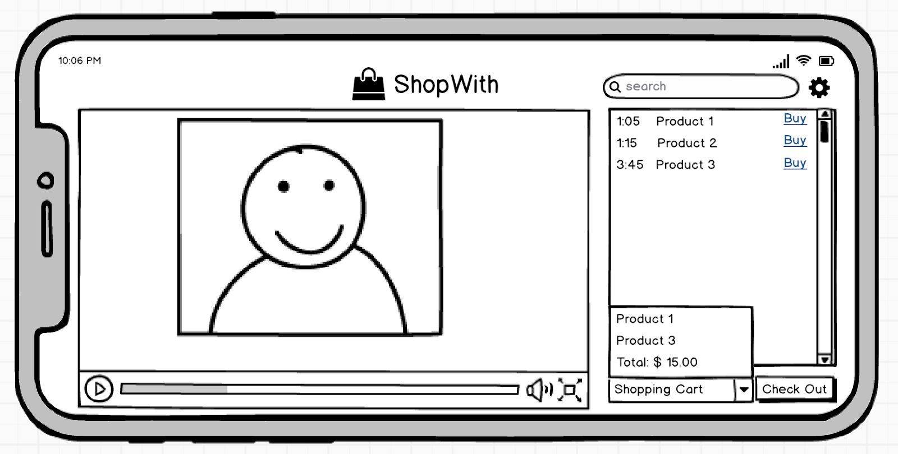
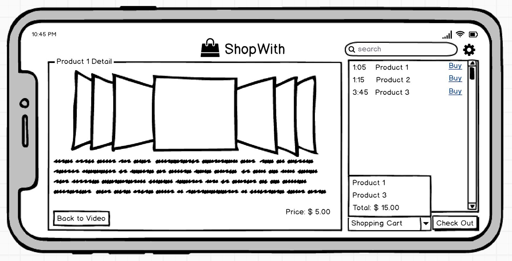
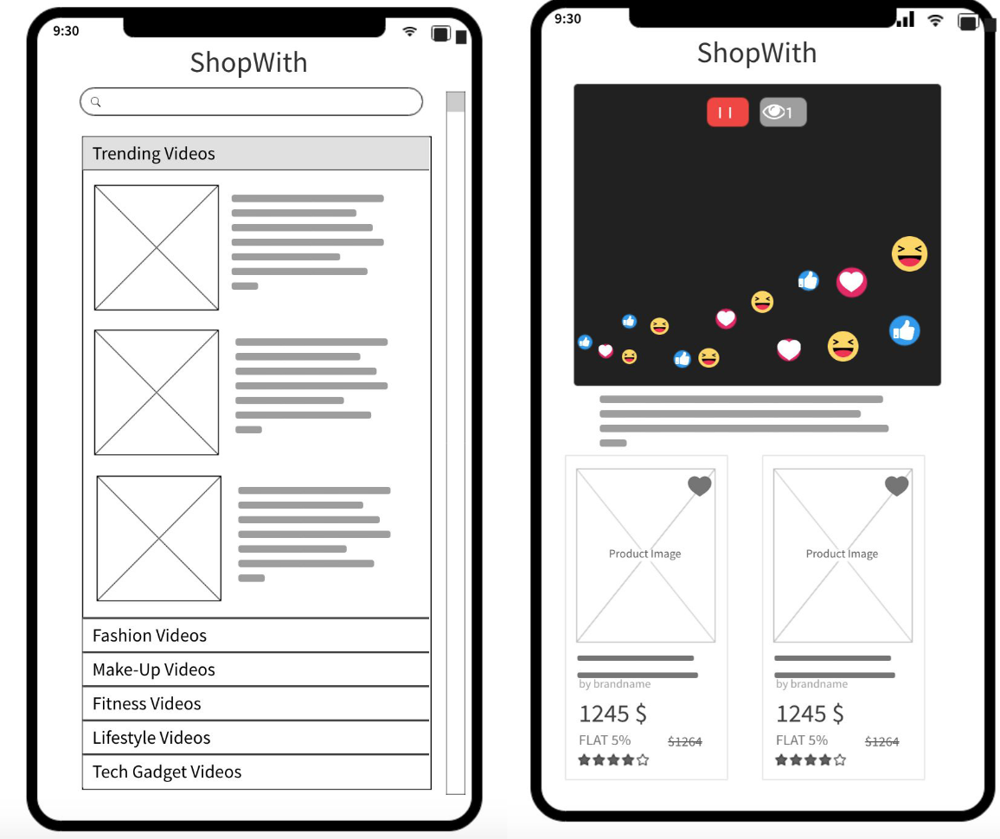
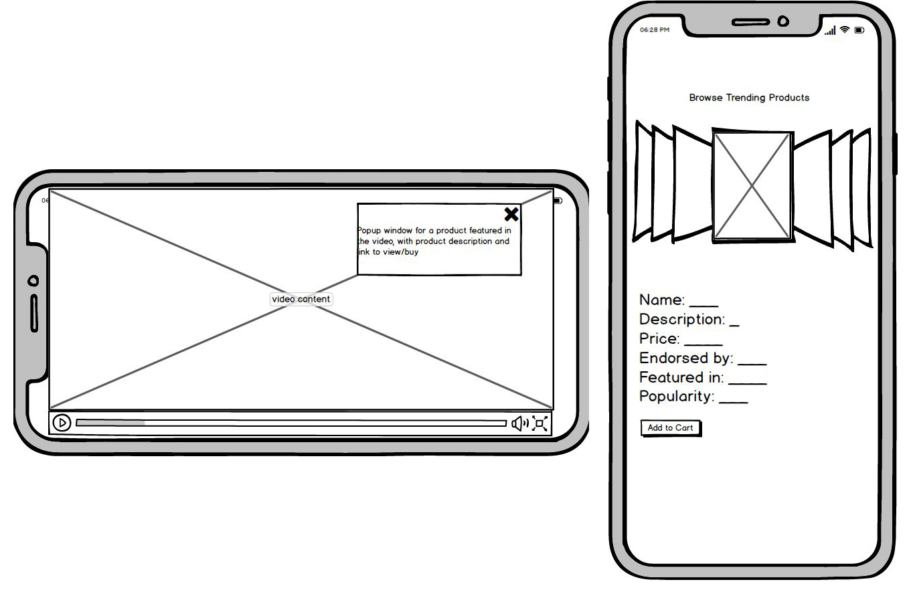
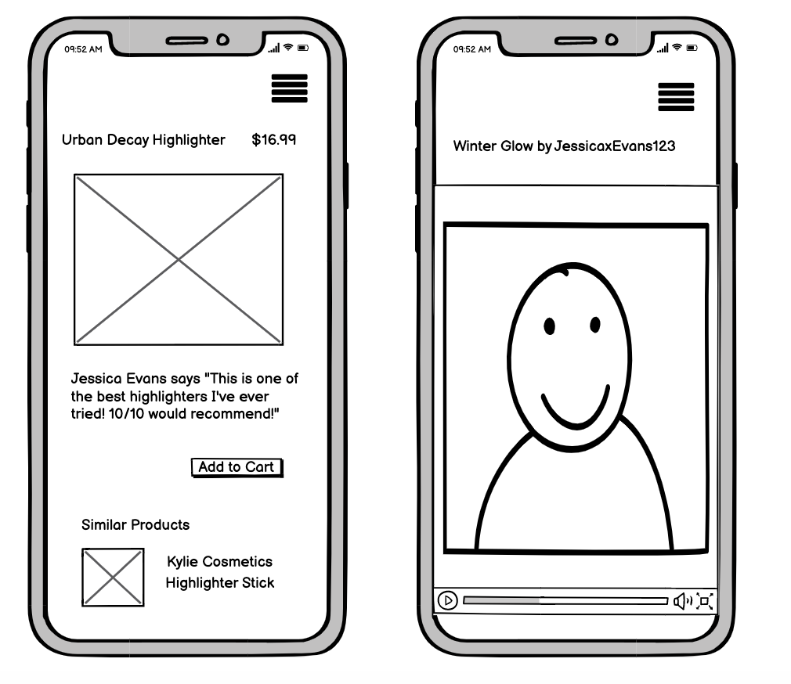

The startup landscape strongly favors rapid iteration and design cycles. So it comes as no surprise that apps will go through endless design changes to fit customer needs. In order to tailor the user experience to the target audience, it's important to collect data on user habits and trends. For this project, I will be investigating the startup, ShopWith through redesign and eye-tracking heatmap data. The objective is to come up with new creative designs that will fulfill the goals of ShopWith. My redesign will then be tested through eye-tracking heatmaps to evaluate how the new app layout and design decisions fare compared to the original.
For background: The ShopWith startup consists of an app interface that allows the user to browse virtual storefronts and aisles alongside their favorite fashion and beauty creators and YouTubers. The users are able to purchase products shown in the videos without leaving the app. The main purpose of the startup is to integrate videos of fashion and beauty influencers with the purchasing of related products. As stated by the startup, "influencers of the world are uniting on mobile apps." Therefore, catering to potential shoppers with an intuitive mobile interface and fluid e-commerce purchasing process is key.
Next, I started sketching low-fidelity wireframes. See below for justification of my design choices.
Sketch set one uses a system where users watch the videos and have the featured products on the side to make them easy to see and buy. It also allows users to slide through all of the products featured in the video.
 Sketch set two below focuses on making the videos easy to find for different sorts of customers and once a video is selected, makes the products stand out below the video.
Sketch set three uses popups to feature the products instead of having them on the side or below. It also allows users to browse products independent of videos.
Sketch set four has the video as its own standalone page, but has all of its products on a separate page so that they stick out and can be viewed alone.
Following are the high-fidelity mockups created through Figma, click through the various screens and interact with the buttons and elements.
This high-fidelity prototype uses the standard aesthetic design principles -- it has a cohesive red-black color palette, and a uniform font scheme across the application. It focuses on ease of use by breaking videos into categories and having them be searchable to make it as easy as possible for users to interact with the videos they want to. Once inside a video, the products are clearly featured below or to the side of the video to meet the end goal of getting users to buy the products.
During the study, the volunteer focus group commented on the legibility issue of black text over the red background, so I changed all texts into white for legibility and consistency. People also wished to see an even more expanded video covering the whole screen and that was incorporated into the design. The possibility to put the order total above to make it more prominent has also been discussed since this is the information that the user cares the most, but after some deliberation it is ultimately reasonable to put it next to the "check out" button, therefore no change was made.
Lastly, a sorting function has been added on the "Featured Product" box after receiving feedback about it. It was also pointed out that we weren't showing the quantity of products in the shopping cart, so that was changed as well.
In order to assess how intuitive the prototypes are, 5 volunteers are given the task to navigate to the correct category of videos, find "Golden Glamour Eye Tutorial", and purchase "KAT VON D Tattoo Eyeliner" from the video section. The task is finished when the user arrives at the shopping cart page. Following are the hypotheses based on the design and predicted user behavior
The data from the heatmap and drawings show that the hypotheses are mostly correct, but there are some new findings that contradicted the predictions. The flow from the home page to the shopping cart was correct- the user visited the pages in the intended order. However, the data shows that the user's eyes often did not immediately jump to the correct button, especially on pages with a lot of text. The user scanned the page from top-to-bottom, often looking at the appealing visuals, before correctly going to the next page. This likely means that the visually striking aspects of the app attract more attention than text blocks. Future designs should continue to investigate this user habit and engage users in iterative interface changes, whether it be visual flow to button placement. Overall, this process has been enlightening and greatly showcased how data can contrast previous expectations and motivate new design changes. I didn't run into many challenges except the technical aspect of compiling eye-tracking data and deciphering results. It's a great learning process for rudimentary data representation.